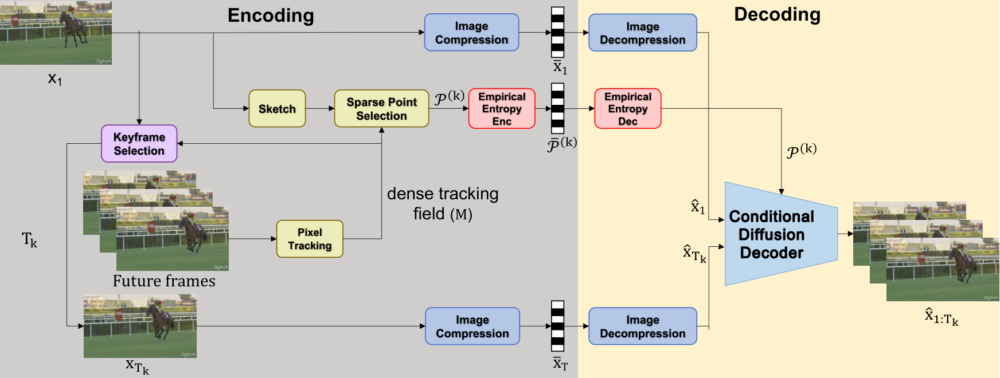
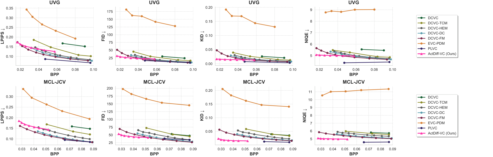
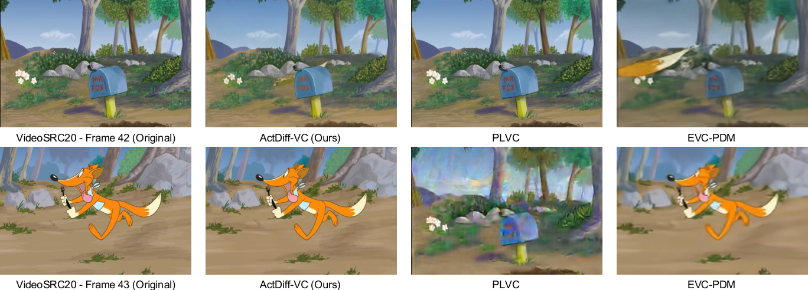
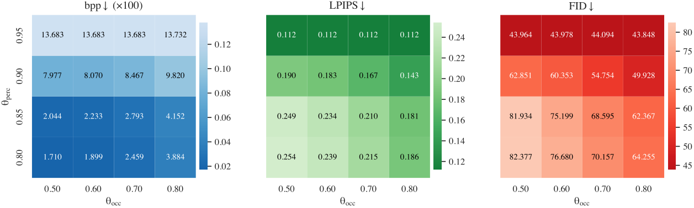

This work makes ultra-low-bitrate video compression more realistic by using diffusion models as powerful generative decoders guided by only a few compact signals.
Instead of transmitting dense motion or detailed residuals, ActDiff-VC sends keyframes only when needed and summarizes motion with a sparse set of tracked point trajectories.
A conditional diffusion decoder then reconstructs the missing frames from the boundary keyframes and these sparse motion cues.
The method uses content-adaptive keyframe selection and budget-aware trajectory selection to keep the bitstream small while preserving important scene dynamics.
On UVG and MCL-JCV, ActDiff-VC achieves up to 64.6% bitrate reduction at matched NIQE, improves KID by up to 64.6%, and improves FID by up to 37.7%, showing that sparse active conditioning can make diffusion-based video compression effective at extreme compression rates.
Method
ActDiff-VC couples content-adaptive temporal segmentation at the encoder with a conditional diffusion decoder.
For each segment, a dense point tracker estimates motion trajectories; a sparse subset of points is chosen under a bitrate budget so that the full field can be reconstructed accurately via locally correlated interpolation.
Keyframes anchor appearance; the sparse trajectory set encodes motion for the diffusion model, which generates frames between keyframe boundaries.
Segmentation & keyframes. Variable-length GOPs with overlap; keyframes are selected when appearance and motion from the current anchor stop being predictive.
Dense tracking & sparse trajectories. A dense tracking field is subsampled to a budget-limited set of trajectories, using importance weights from the reference frame to prioritize informative regions.
Conditional diffusion decoding. The decoder conditions on boundary keyframes and the sparse trajectory set to synthesize intermediate frames while maintaining temporal coherence across segments.

Figure 1. Framework overview.
Experiments
We evaluate on UVG and MCL-JCV at 480×720 (except the diffusion baseline EVC-PDM, evaluated at 128×128 per its released code).
We report LPIPS, FID, KID, and NIQE (lower is better for all), which better reflect perceptual realism in the ultra-low-bitrate regime than pixel-wise distortion.
Baselines include learned codecs DCVC, DCVC-TCM, DCVC-HEM, DCVC-DC, DCVC-FM, GAN-based PLVC, and diffusion-based EVC-PDM, using official implementations and pretrained weights where available.
Quantitative comparison
Figure 2 plots each metric versus bits per pixel (BPP).
ActDiff-VC is strongest in NIQE and KID at very low rates: e.g., NIQE 5.08 at 0.0164 BPP on UVG and 5.10 at 0.0276 BPP on MCL-JCV, while DCVC-FM needs about 0.0372 and 0.0780 BPP respectively for similar NIQE—corresponding to 55.9% and 64.6% bitrate reductions.
For KID at similar low BPP, improvements over DCVC-FM are up to 64.6% (UVG) and 58.0% (MCL-JCV).
FID also improves in the ultra-low-rate regime (e.g., 37.7% vs. DCVC-FM on UVG at comparable bitrate; 22.8% on MCL-JCV).
LPIPS remains competitive with older DCVC variants though not below DCVC-FM; versus EVC-PDM at roughly 0.032–0.036 BPP, ActDiff-VC improves LPIPS by about 49%, FID by about 80%, KID by about 91%, and NIQE by about 49% on average across the two datasets.

Figure 2. Quantitative comparison on UVG and MCL-JCV: LPIPS, FID, KID, and NIQE vs. BPP (rasterized from metrics_vs_bpp.pdf page 1).
Qualitative comparison
Figure 3 shows side-by-side reconstructions at comparable (sometimes higher) bitrates for competing methods.
Numbers under each panel report per-video BPP, LPIPS, and FID.
Red boxes in these figures highlight difficult regions (fine texture, boundaries); ActDiff-VC tends to preserve structure with fewer blur and breakup artifacts than baselines at similar rates.
Figure 4 uses videoSRC20 from MCL-JCV, where a scene cut occurs between frames 42 and 43.
ActDiff-VC detects the cut and inserts a new keyframe, so the first frame after the cut is reconstructed faithfully.
PLVC uses a fixed keyframe interval and cannot react to the abrupt change, so the reconstruction after the cut still looks like the previous scene with visible distortion.
EVC-PDM can adapt using diffusion-based forecasting at the encoder, but still achieves lower visual quality than ActDiff-VC in this example.

Figure 4. Content-adaptive keyframe selection around a scene cut (rasterized from visulization_keyframe_selection.pdf page 1).
Ablation: components
At fixed bitrate on UVG, we ablate (i) keyframe policy, (ii) trajectory selection, and (iii) bidirectional conditioning, reporting ΔLPIPS and ΔFID vs. the full model (Adaptive GOP + sketch-weighted content-aware points + bidirectional conditioning; Δ > 0 means worse). Values match the ablation table in the arXiv PDF.
Bidirectional conditioning. Turning it off hurts quality (e.g., larger ΔFID under adaptive GOP). Under fixed GOP with uniform sampling, adding bidirectional conditioning reduces ΔFID from about +59.4 to about +38.0 and ΔLPIPS from about +0.18 to about +0.13, showing it stabilizes synthesis.
Adaptive vs. fixed GOP. Adaptive GOP greatly reduces degradation: e.g., uniform grid + bidirectional: ΔFID drops from about +38.0 (fixed) to about +5.6 (adaptive), and ΔLPIPS from about +0.13 to about +0.02.
Trajectory selection. High-magnitude–flow sampling overweights large motion and hurts texture (ΔFID about +12.5 vs. +5.6 for uniform under adaptive GOP). Uniform is balanced but blind to content. Sketch-weighted content-aware selection matches the full design; dropping sketch weighting gives small but consistent hits (ΔFID about +1.42, ΔLPIPS about +0.02).
Ablation: Adaptive GOP thresholds
Figure 5 sweeps occupancy threshold θocc and perceptual threshold θperc on high-motion MCL-JCV sequences with scene cuts (same heatmaps as theta_occ_theta_perc_heatmaps_bpp_lpips_fid_bpp_lpips_fid.pdf in the manuscript).
Raising either threshold terminates segments sooner (more keyframes), increasing BPP while improving LPIPS and FID.
θocc has the stronger, more consistent effect on the rate–quality trade-off; θperc matters more at high values (e.g., 0.85 → 0.90).
For ultra-low bitrate (bpp ≤ 0.05), we use θperc = 0.85 and θocc = 0.8 (about 0.0415 bpp with strong perceptual scores in that sweep).

Figure 5. Sensitivity of Adaptive GOP to θocc and θperc: BPP (×100), LPIPS, and FID (lower is better).
Conclusion
This work shows that compact but informative motion conditioning is the key to better video compression in the ultra-low-bitrate regime.
By combining adaptive keyframe selection with sparse tracked point trajectories, ActDiff-VC gives a diffusion decoder enough structure to reconstruct perceptually realistic video without transmitting dense motion fields or detailed residuals.
The results demonstrate that active sampling can significantly improve perceptual quality and bitrate efficiency, making diffusion-based generative models a promising direction for video compression when bandwidth is extremely limited.
Cite this work
A. Javadi, S. Saeedi Bidokhti, and T. Javidi,
Active Sampling for Ultra-Low-Bit-Rate Video Compression via Conditional Controlled Diffusion,
arXiv:2605.02849, 2026.
@misc{javadi2026actdiffvc,
title={Active Sampling for Ultra-Low-Bit-Rate Video Compression via Conditional Controlled Diffusion},
author={Javadi, Amirhosein and Saeedi Bidokhti, Shirin and Javidi, Tara},
year={2026},
eprint={2605.02849},
archivePrefix={arXiv},
primaryClass={cs.CV},
url={https://arxiv.org/abs/2605.02849},
}